File Navigation and Management
pwd
This will tell you the full path of the directory you are currently in.
example:
[cmd] pwd
I listed the directory I am currently in which is the default directory after you ssh into the server.
output:
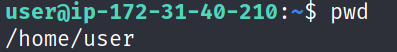
ls [-la]
This will list all files including hidden files (files that start with a dot(.)) and give the permissions of each file
example:
[cmd] ls
will list all files in the current directory (folder) unless it is hidden.
[cmd] ls -la
will list all files in the current directory including hidden files. In addition it will also display the file permissions for each file.
[cmd] ls -l
This command performs the functions of the ls [cmd] and also lists permissions of the files (because of the -l switch)
[cmd] ls -a
This command performs the functions of the ls [cmd] and also lists all hidden files in the current directory (because of the -a switch)
output:
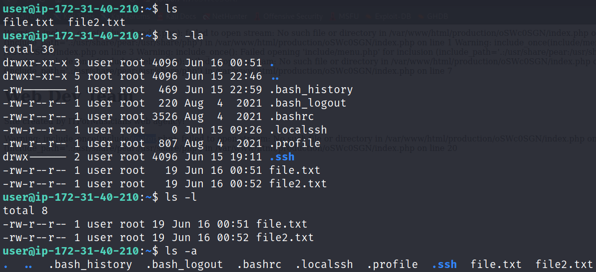
cd [directory]
First I listed the directory I am currently in which is the /home/user directory (using the pwd command). Then I move a single directory higher with [cmd] cd ..
As you can see, we are now in the /home directory which contains the user directory and is one level higher.
[cmd] cd ..
output:
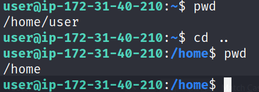
First I listed the directory I am currently in which is the /home/user directory. Then I moved to the root directory, the highest level directory which contains all other directories and files in linux.
I then used [cmd] pwd to list the directory I am in and confirm I am in the root directory (/).
Note: This is not the root user's directory
[cmd] cd /
output:
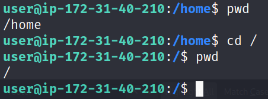
First I listed the directory I am currently in which is the root directory (/). Now I moved to the home directory of the user who entered the command.
Since I am currently the user "user", I will move to the /home/user directory (as confirmed with [cmd] pwd).
[cmd] cd ~
output:
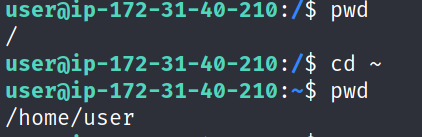
mkdir [name]
First I used [cmd] ls -la to show all the files that currently exist. Then we use [cmd] mkdir direc to create a new directory called direc
We can see this new directory by listed all files and directories again with [cmd] ls -la.
example:
[cmd] mkdir direc
output:
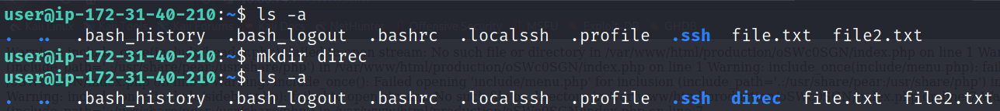
rm [name]
The file will be permanantly removed. It is not like moving a file to the trash can on Windows.
However it is possible to recover the file with forensic data recovery software.
example:
First, I listed the contents of our directory with [cmd] ls which are file.txt and file2.txt. Then I used [cmd] rm file.txt to permanatly delete file.txt from the server. Using [cmd] ls again we can see file.txt is gone.
[cmd] rm file.txt
output:
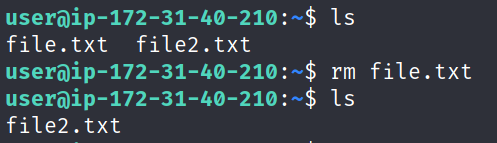
touch [name]
create a empty text file
example:
Using [cmd] ls -la we list all contents that are currently in the directory. Then we use [cmd] touch file_t.txt to create an empty text file called file_t.txt. We use [cmd] ls -la once again to confirm the creation of this file.
[cmd] touch file_t.txt
output:
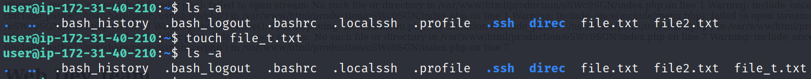
cp [filename] [full path of new location]
Copy a file or directory to a new location. It can be in the present directory or any other directory.
example:
First we list the contents of file.txt [cmd] cat file.txt. Then we copy it to the home directory [cmd] cp file.txt /home/example/ . Now we move into the home directory [cmd] pwd and check confirm the content is the same [cmd] cat file.txt.
[cmd] cp file.txt /home/example/
output:
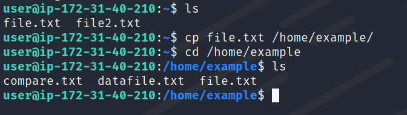
cat [file1] [file2] [file…]
examples:
display the content of a file
[cmd] cat file.txt
output:
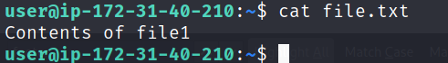
combine the content of two or more files
I first show the contents of file.txt and file2.txt. Then I combine them together in a new file (file3.txt) and show the resulting content
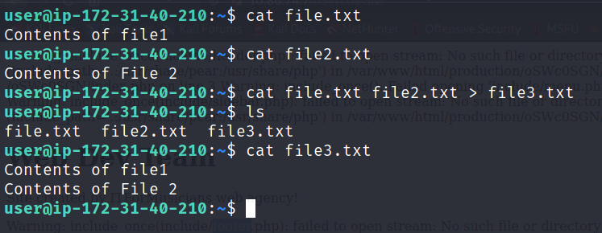
echo [text]
redirect the specified line of text somewhere. It can be the terminal or a file.
example:
[cmd] echo "this line will show up in terminal"
output:
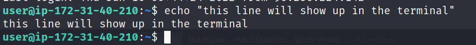
We first open file2 to show its contents [cmd] file2.txt. Now we add our string to it [cmd] echo "this line will show up in the file">>file2.txt
[cmd] echo "this line will show up in the file" >>file2.txt
output:
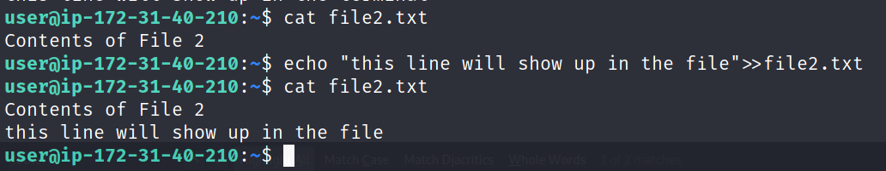
mv [filename] [full path of new location]
This command can be used to move a file/directory to another directory or rename a file/directory.
examples:
We will rename a file
First we do [cmd] cat file2.txt to show the contents of the file. Then we do [cmd] mv file2.txt file3.txt to actually rename it. Now we use [cmd] cat file3.txt to make sure the content is not changed.
Since the content is the same, all we have done is rename file2.txt to file3.txt.
[cmd] mv file2.txt file3.txt
output:
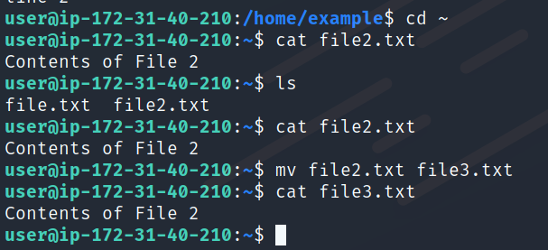
We will move a file to another directory
First we do [cmd] cat file2.txt to show its contents. Then we do [cmd] mv file2.txt /home/example/file2.txt to move it to another directory. Now we go into that directory to confirm it is there.
output:
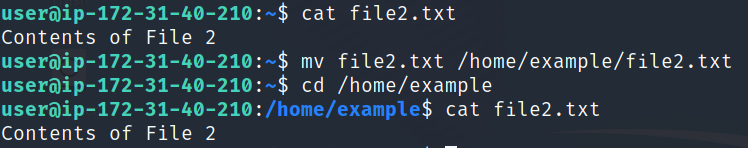
clear
clear the terminal screen
example:
We first run a few commands to fill the screen [cmd] ls [cmd] pwd [cmd] cd .. [cmd] pwd. Now we use [cmd] to empty the screen.
[cmd] clear
output:
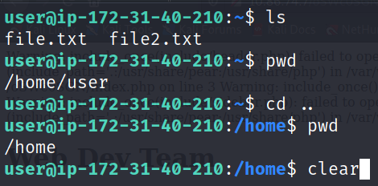
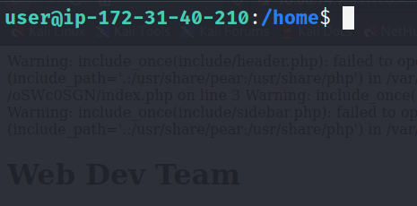
File and Directory Permissions
permissions are a line of characters that look like this: -rwx-r–r–
you can find the permissions for a file or directory using [cmd] ls -l
understanding permissions
examples:
The - at the beggining of the line signals that file.txt is indeed a file.
This file has read and write permissions for the user, read permissions for the group, and read permissions for anyone else.
[cmd] ls -l file.txt
output:
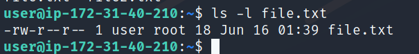
chmod - change mode and permissions
octal values are another way to represent privledges without using the letters string.
The octal values for each privledge are:
1: x (execute)
2: w (write)
4: r (read)
In order to represent a permission with multiple privledges we add the numbers.
examples:
The octal value of file.txt is 644 because the user permission has both read and write so 4+2=6.
If we wanted to change the permissions so everyone could read and write, we would use 666. After using the command we can see with [cmd] ls -l file.txt that everyone has read and write permissions.
[cmd] sudo chmod 666 file.txt
output:
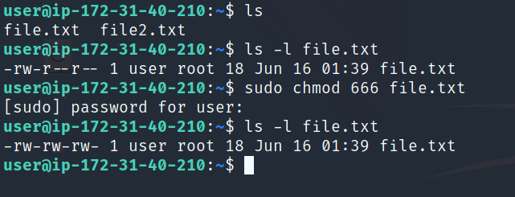
File and Directory Ownership
note: the following commands need root permissions to run.
You need to append sudo in order for them to work.
chown [new owner] [file/folder]
change ownership of a file or folder
example:
[cmd] sudo chown admin file.txt
output:
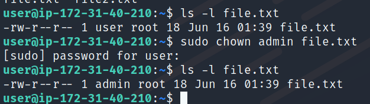
chgrp [new group] [file name]
change group ownership
example:
The group that is this file is set to is currently the "root" group. We change it into the "mygroup" group.
[cmd] sudo chgrp mygrouup file.txt
output:
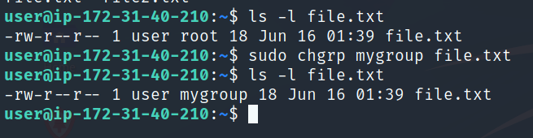
su [username]
change to another user account
example:
[cmd] sudo su admin
output:
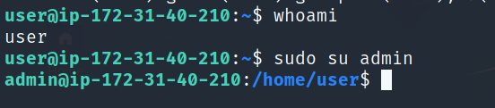
Distribution and System Info
whoami
displays the name of the current user
example:
[cmd] whoami
output:
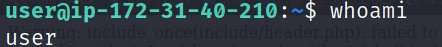
hostname
displays name of current workstation
examples:
show hostname
[cmd] hostname
output:
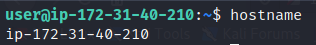
id
displays the user and group names and ids
example:
[cmd] id
output:
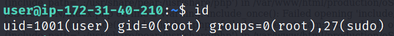
lsb_release -a
print information about the linux distribution of the system
example:
The command tells us the distribution is Debian and the Debian version is 11.
[cmd] lsb_release -a
output:
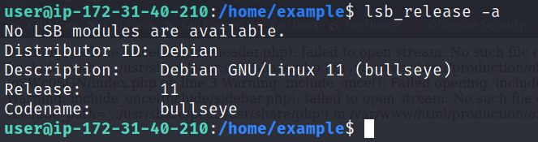
lscpu
gives information on the cpu
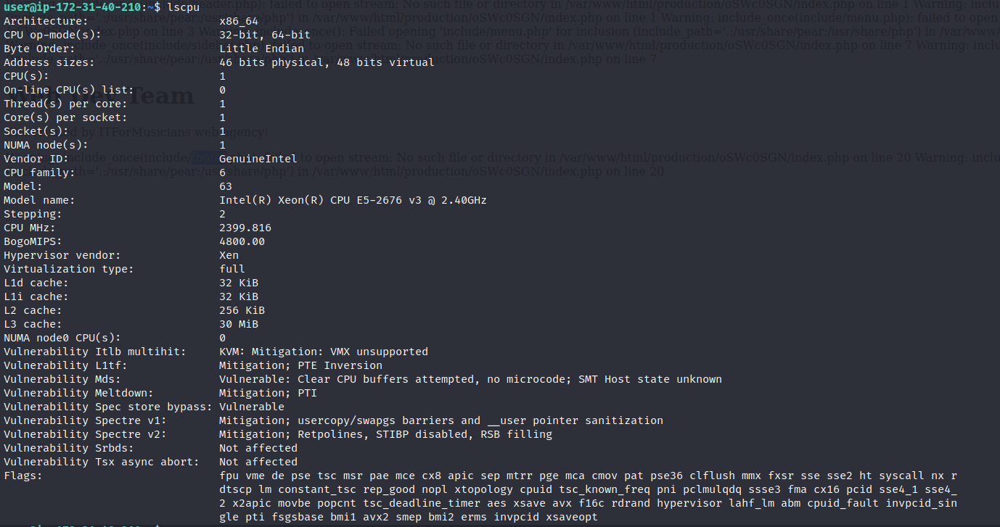
View File Content
For these commands we will start in the example directory which is at /home/example.
cat [file]
outputs the full file content from first to last line into console
example:
[cmd] cat datafile.txt
output:
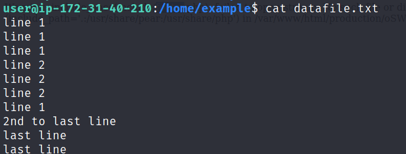
tac [file]
outputs the full file content from last line to first line
example:
[cmd] tac datafile.txt
output:
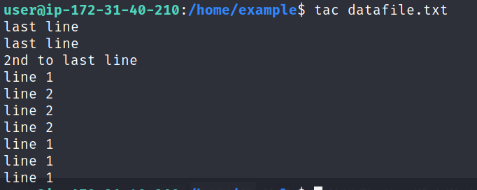
tail -n [num] [file]
outputs the last [num] lines of a file
example:
[cmd] tail -5 datafile.txt
output:
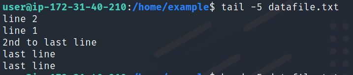
head -n [num] [file]
outputs the first [num] lines of a file
example:
[cmd] head -5 datafile.txt
output:
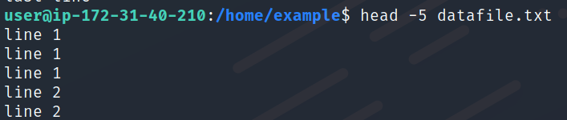
less [file]
lists the contents of the file fit to console screen
use arrow keys to move around
examples:
First open up less, all navigation commands are done within less.
[cmd] less auth.log
We want to find all occurences of admin, this command will highlight them all.
[cmd] /admin
output:
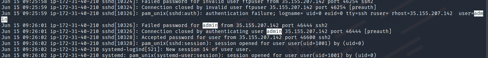
Manipulate File Content
uniq [file]
removes all duplicate adjacent lines
example:
The adjacent "line 1", "line 2" and "last line" lines were removed, however unadjacent ones remained.
[cmd] uniq datafile.txt
output:
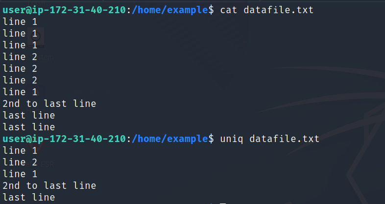
sort [file]
sorts all lines alpha-numerically
could be used with uniq to filter out all duplicate lines
example:
We sorted the file alpha-numerically and redirected the output into another file datafile2.txt. If we open it [cmd] cat datafile2.txt we see the sorted output.
[cmd] sort datafile.txt > datafile2.txt
output:
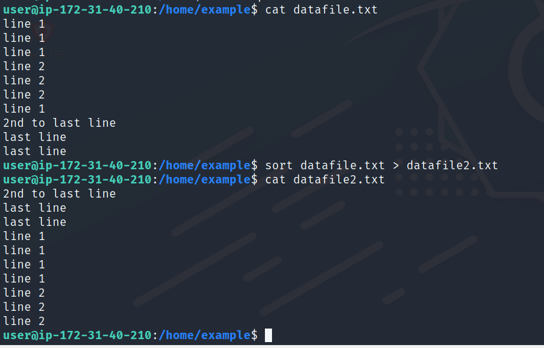